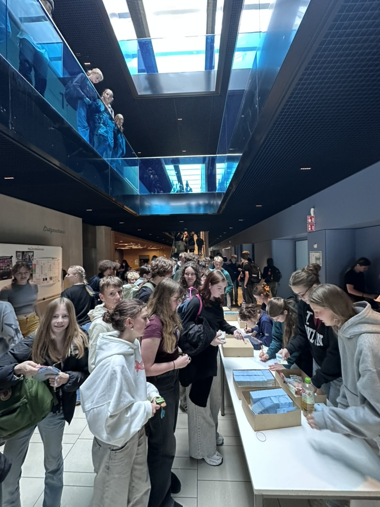
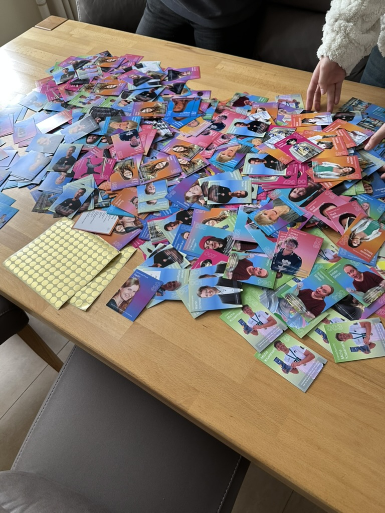

Case Study 11. Klasse · 2025/26
Das Lehrerkarten-
Projekt.
Wie aus einem Sammelkarten-Trend an unserer Schule über 15.000 verkaufte Karten und mehr als 10.000 € für die Abikasse wurden.

Verkaufte Karten
0+Umsatz
>0 €Ziel
AbiballDie Herausforderung
Einen Abiball zu finanzieren ist für jeden Jahrgang eine große Hürde. Die klassischen Wege – Kuchenbasar, Waffelverkauf – bringen viel Aufwand und wenig Geld. Ich wollte etwas, das skalierbar ist, richtig Geld einbringt und gleichzeitig die ganze Schule mitnimmt.
Die Idee
Ein schulinterner Sammelkarten-Trend – wie Fußball-Sammelbilder, nur mit unseren eigenen Lehrerinnen und Lehrern als Trading Cards. In Kooperation mit Lehrerkarten.de wurden blickdichte Booster-Packs produziert. Niemand weiß, wen er zieht, alle wollen tauschen – und genau das hat auf dem Pausenhof einen echten Hype ausgelöst.
Die Umsetzung
Ich habe das Projekt eigenständig organisiert – von der ersten Anfrage bis zum letzten verkauften Pack.
- Planung & AbstimmungProjektplan, Gespräche mit Schulleitung und Kollegium, Einverständnis der Lehrkräfte.
- Fotoshootings & DesignOrganisation der Shootings und Abstimmung des Kartendesigns mit dem Partner.
- MarketingPlakate, Durchsagen und Aktionen in der Schule, damit der Start richtig zündet.
- Vertrieb & FinanzenVerkaufsstände, Logistik, Kasse und Abrechnung – sauber dokumentiert für die Abikasse.
Das Ergebnis
Über 15.000 verkaufte Karten und mehr als 10.000 € Umsatz für unseren Abi-Jahrgang. Vor allem aber: Ein Projekt, über das an der ganzen Schule gesprochen wurde – mit Schlangen am Verkaufsstand und Tauschbörsen in jeder Pause.

Was ich gelernt habe
„Aus einer kreativen Idee, klarem Projektmanagement und gezieltem Marketing kann ein echtes, funktionierendes Geschäftsmodell werden.“
Ich habe gelernt, Verantwortung für Geld und Menschen zu übernehmen, mit Erwachsenen auf Augenhöhe zu verhandeln und den Überblick zu behalten, wenn viele Dinge gleichzeitig passieren. Genau diese Mischung aus Wirtschaft, Organisation und Technik will ich im dualen Studium weiter ausbauen.
Weiter